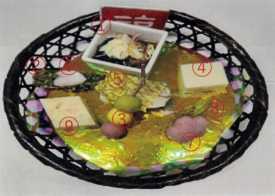

Jenis Hidangan Jepang
前菜（ぜんさい）
Hidangan pembuka. Porsi kecil untuk menggugah selera, seperti sayuran
atau acar.
お造り（おつくり）
Irisan ikan mentah (sashimi), disajikan dengan kecap asin dan wasabi.
吸い物（すいもの）
Sup bening Jepang yang ringan, berisi tahu, sayuran, atau makanan laut
kecil.
炊き合わせ（たきあわせ）
Rebusan beberapa bahan yang disajikan bersama. Tiap bahan direbus
terpisah agar rasanya khas.
焼き物（やきもの）
Hidangan panggang, seperti ikan saba yang dipanggang dengan garam atau
saus.
揚げ物（あげもの）
Makanan yang digoreng, contohnya tempura atau karaage (ayam goreng).
蒸し物（むしもの）
Makanan kukus seperti chawanmushi (custard telur kukus dengan isi
daging atau udang).
酢の物（すのもの）
Hidangan yang dibumbui cuka ringan, menyegarkan. Contohnya rumput laut
dan seafood dengan saus cuka.
香の物（こうのもの）
Acar Jepang, seperti lobak asin (takuan) atau umeboshi (buah asam).
Disajikan sebagai pelengkap.
ご飯（ごはん）
Nasi putih, sebagai makanan pokok dalam setiap set makanan Jepang.
止め椀（とめわん）
Sup terakhir seperti miso shiru, untuk menutup seluruh rangkaian
hidangan.
水物（みずもの）
Hidangan penutup. Biasanya buah segar, jelly, atau manisan Jepang
ringan.
Makanan khas jepang yang umum
和食の代表的なもの
寿司（すし）
Sushi: Nasi dengan cuka yang biasanya disajikan dengan ikan mentah,
telur, atau sayuran di atasnya atau digulung dengan nori (rumput
laut).
刺身（さしみ）
Sashimi: Irisan ikan mentah segar, disajikan dengan kecap asin dan
wasabi. Tidak memakai nasi.
天ぷら（てんぷら）
Tempura: Makanan laut atau sayur yang digoreng dengan adonan ringan
dan renyah.
すき焼き
Sukiyaki: Masakan daging sapi, tahu, sayuran, dan mi yang dimasak
dalam panci bersama saus manis asin (kecap dan gula).
しゃぶしゃぶ
Shabu-shabu: Potongan tipis daging dan sayuran yang dicelupkan
sebentar ke dalam air panas lalu dimakan dengan saus celup.
うどん
Udon: Mi tebal dari tepung terigu, disajikan dalam kuah hangat atau
dingin, kadang diberi topping seperti tempura.
蕎麦（そば）
Soba: Mi tipis dari tepung buckwheat. Bisa disajikan panas atau
dingin, cocok dimakan saat musim panas atau dingin.
みそ汁（みそしる）
Miso Shiru: Sup Jepang dari pasta miso. Biasanya berisi tahu, rumput
laut, dan sayuran kecil.
3月 4月お品書き
前菜（ぜんさい）
Makanan pembuka

-
① 若布（わかめ）・とろろ芋（いも）・蛍烏賊（ほたるいか）沖漬け
Wakame, ubi parut, dan cumi kecil yang direndam dengan kecap asin.
-
② 鰆（さわら）梅煮（うめに）
Ikan sawara yang direbus dengan saus plum (asam manis).
-
③ 三色団子（さんしょくだんご）
Dango tiga warna (merah muda, putih, hijau) – kue beras khas musim
semi.
-
④ 酒粕（さけかす）ムース
Mousse dari ampas sake – lembut dan harum.
-
⑤ 桜鯛（さくらだい）寿司（すし）
Sushi dengan ikan tai musim sakura.
-
⑥ 花びら百合根（はなびらゆりね）
Umbi bunga lili berbentuk kelopak – disajikan sebagai garnish.
-
⑦ 桜長芋（さくらながいも）
Ubi panjang (nagaimo) yang dibumbui atau diberi warna seperti
sakura.
-
⑧ たらの芽（め）唐春身まぶし（とうはるみ）
Toge pohon tara digoreng ringan dengan remah roti – khas musim semi.
-
⑨ 春キャベツ真丈（しんじょう）
Adonan dari kol musim semi dan bahan lembut seperti tahu atau ikan
giling.
お造り（おつくり）
Shashimi atau irisan ikan mentah
-
① 奄美鮪（あまみまぐろ）
Ikan tuna dari Amami – disajikan sebagai sashimi segar.
-
② 鯛（たい）
Ikan tai (ikan kakap merah), simbol keberuntungan dalam budaya
Jepang.
-
③ とり貝（とりがい）
Kerang tori-gai – kerang besar berwarna gelap, teksturnya lembut.
-
④ 伊勢海老（いせえび）または 車海老（くるまえび）
Udang besar (lobster Ise atau udang Kuruma), mewah dan manis.
-
⑤ 山葵（わさび）、芽紫蘇（めじそ）、扇子昆布（せんすこんぶ）
Wasabi, tunas daun shiso, dan hiasan dari rumput laut berbentuk
kipas.
吸い物（すいもの）
Sup bening
-
⑤ 蓮豆腐（はすどうふ）
Tahu dari akar teratai – teksturnya lembut, disajikan dalam sup
bening.
炊合せ（たきあわせ）
Rebusan berbagai bahan
-
① 黒豚の角煮（くろぶたのかくに）
Daging babi hitam dimasak rebus manis.
-
つわ旨煮（つわうまに）
Sayur "tsuwa" direbus dalam rasa manis asin.
-
桜人参（さくらにんじん）
Wortel berbentuk bunga sakura, sebagai hiasan.
-
新じゃがいも揚煮（しんじゃがいもあげに）
Kentang baru digoreng lalu direbus.
焼き物（やきもの）
Makanan Panggang
-
② 鮎道明寺桜焼き（あゆどうみょうじさくらやき）
Ikan ayu dibungkus daun sakura dan dipanggang ala Domyoji.
-
③ ガネ天
Gorengan sayur manis khas Kagoshima, mirip bakwan ubi.
-
④ 塩トマトワインゼリー掛け（しおとまとわいんぜりーがけ）
Tomat asin dengan topping jelly anggur putih.
-
⑤ 磯つぶ貝ガーリック焼き（いそつぶがいがーりっくやき）
Kerang laut kecil dipanggang dengan bawang putih.
強肴（しいざかな））
Hidangan utama atau lauk utama
-
① 黒豚のしゃぶしゃぶ（くろぶたのしゃぶしゃぶ）
Daging babi hitam iris tipis untuk shabu-shabu.
酢の物（すのもの）
Makanan yang di beri cuka
-
① 蛸のたたき ポン酢（たこのたたき ぽんず）
Gurita diiris tipis dengan saus ponzu.
-
② ひおうぎ貝酢味噌掛け（ひおうぎがい すみそがけ）
Kerang hias dengan saus miso asam.
-
③
かにの吉野煮 新玉葱ヘルシー掛け（かにのよしのに しんたまねぎへるしーがけ）
Daging kepiting direbus ala Yoshino dengan saus bawang baru.
ご飯・止め椀・香の物・果物
-
ご飯（ごはん）
Nasi putih kukus.
-
止め椀（とめわん）：白味噌仕立て（しろみそじたて）
Sup miso putih.
-
香の物（こうのもの）
Acar khas Jepang.
-
果物（くだもの）：いちご・桜アイス（さくらあいす）
Buah stroberi dan es krim rasa sakura.